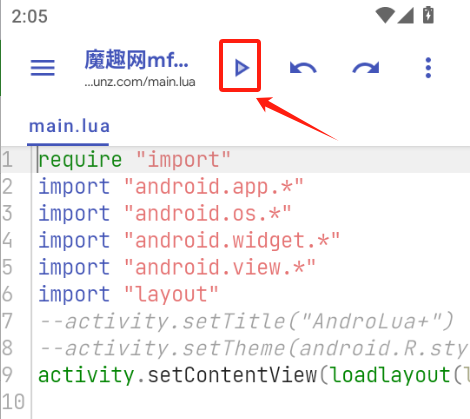
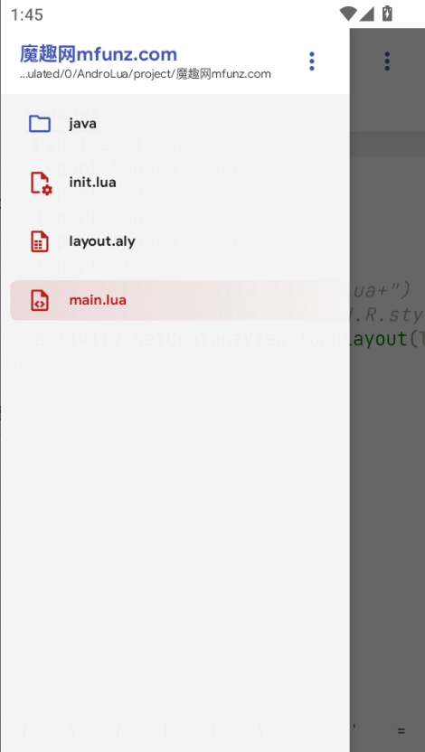

用 Shield 搭一套安卓轻量开发流水线，从想法到打包不碰电脑
每周要做的安卓小工具，以前要开 Android Studio 加模拟器，现在一台手机装 Shield 就能走完整个流程。这篇讲我这套工作流的拼接细节和踩过的坑。
以前做安卓小工具，我走过哪些弯路
我每周都会冒出一两个「要是手机上有这么个小工具就好了」的念头——批量重命名文件、快速转发一段固定格式的文字、定时提醒喝水——都是三五百行代码就能搞定的东西。但以前每次动手，流程都卡得我不想往下走：
开 Android Studio，新建一个空工程，Gradle 同步等十分钟，写代码，开模拟器跑一遍，导出 APK 拷到手机里测试。调试一轮又一轮，每改一次代码都要重复这套链路。等到第三个星期这个小工具大概已经忘了当初要干嘛。
后来试过各种壳子和在线编辑器，要么功能不全，要么导出的包自己都跑不起来。真正让我把「想法 → 能用」的周期压缩到一小时内的，是装了 Shield 之后。
新流程：Shield 在整条链里的位置
现在我的安卓小工具流水线是这样的：一台手机从官方下载装 Shield → 开 Shield 写 Lua → 按三角直接跑 → 打包成 APK → 存到网盘。整条链只有这台手机，没有电脑、没有模拟器、没有 Gradle。
Shield 解决的是中间那三行——写、跑、打包。上下游配合的工具也都是手机上现成的：
- 写：Shield 自带的 Lua 编辑器。左上角三线图标打开工程抽屉，能看到完整存储路径
/storage/emulated/0/AndroLua/project/<项目名>/，改到哪个工程一眼不会错。多文件切换靠顶部标签，写个 100 行的小项目绰绰有余。 - 跑：顶栏那个三角按钮就是全部的运行机制。按下去，Lua 解释器读
main.lua，把布局表渲染成安卓界面。第一次跑什么都不改，能出来空白页面就证明环境没问题，之后每次报错范围一下子缩小——要么是你改的那几行，要么是 Lua 语法。 - 打包：写完直接导 APK，Shield 处理所有签名和工程配置。
上游的「想法」阶段，我用手机自带的备忘录记下来，列清楚界面要几个按钮、每个按钮点下去干嘛。下游的「发布」阶段，APK 生成后直接用文件管理器移到网盘同步，或者用另一个 Shield 实例装上去自己测试。
实操里最容易断链的两个环节
这套流程听起来简单，但我跑了大概二十个小工具之后，有两个地方反复让我卡住。现在基本都是条件反射地处理了。
运行飞了怎么办？撤销 + 组合拳
写 Lua 最容易犯的错就是手滑写个死循环，或者界面布局参数写错导致白屏。这时候 Shield 不会给你什么友好提示——界面直接卡死或者一片空白。
我的解法是「撤销 + 运行」组合拳：连按几次顶栏的左弧形箭头（撤销），直到脚本回到上一个能跑的状态，按三角确认没问题之后，再逐步重做刚才的修改，每重做一步跑一次。跑挂的那一步就是凶手。手机上没有键盘快捷键，所以我每次改动幅度都控制在十行以内——改一小段、跑一次，出问题立刻定位。
脚本真跑飞了连界面都切不回来怎么办？从最近应用里把 Shield 划掉重开就行，编辑内容不会丢——这是我试过三次死循环之后才敢放心写的。

工程多了之后怎么对账？看路径不看名字
Shield 允许同名工程同时存在——我就真的建过两个都叫 backup 的工程，改了半个月才发现一直在改旧的那个。
后来养成了一个习惯：每次开工前先点左上角三线打开工程抽屉，看顶部第二行的完整路径。那行小字平时不起眼，但 /storage/emulated/0/AndroLua/project/backup/ 和 /storage/emulated/0/AndroLua/project/backup_v2/ 是两个不同的目录。对账完再动手，比看工程名靠谱得多。
工程跑起来之后，Shield 会自动生成 icon.png、welcome.png 这些资源文件，全部堆在同一个目录里。工程就是普通文件夹，拿着路径去文件管理器直接复制、备份、分享都行，目录结构和各文件的完整分工可以去Shield文档查。

工具箱是给研究向用户准备的
写自己的工程用不上太多额外工具，但 Shield 底部最右侧那个「我的」标签里藏了五件工具——图标仓库、配色参考、DEX 查看、安装包提取、指定类分析。前两件帮你给工程换个像样的门面，后三件是反编译向的，可以拆开别人装过的应用看结构。
我现在的用法是：写完自己的小工具打包前，用图标仓库挑个不那么丑的图标换上；想研究某个开源应用的内部结构时，先在手机上装一下，再用安装包提取导出来，进 DEX 查看类结构。这整套研究流程也不用碰电脑，直接在 Shield 里走完。
这套流程省了多少事、什么时候不划算
算一笔账：以前从想法到打包要 45 分钟以上（AS 启动 + 同步 + 编码 + 模拟器 + 导出），现在稳定在 15 分钟。少了开电脑、少了等 Gradle、少了 USB 拷包——每次至少少两次手动复制，还不算调试时来回切窗口的时间。
但它有明确的边界。超过两千行的项目我不会用 Shield——Lua 的编辑器没有语法高亮、没有补全、没有重构，纯手写全靠脑子记，大项目写起来会很痛苦。Shield 适合的就是我这种场景：小工具、快迭代、写完就扔或者自己长期用。需要团队协作、需要 CI/CD、需要上架到应用商店的正经产品，还是得回到 Android Studio 走正规流程。
另外它只支持 Lua。如果你是 Kotlin/Java 老手，转过来写 Lua 的安卓界面需要适应一下——布局是表结构不是 XML，事件绑定的写法也不一样。但只要过了那两三个小工具的门槛，后面就是行云流水。
收尾
我把这套工作流的核心思路——Shield 本体的安装包、完整的示例工程、以及一些常用的 Lua 界面片段——整理在三份同步更新的资料里，GitHub 放完整版，Gitee 对国内访问更友好，GitCode 作为额外备份，哪个顺手用哪个。